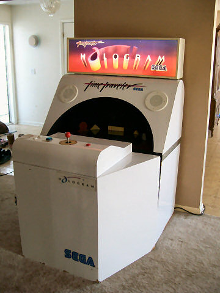
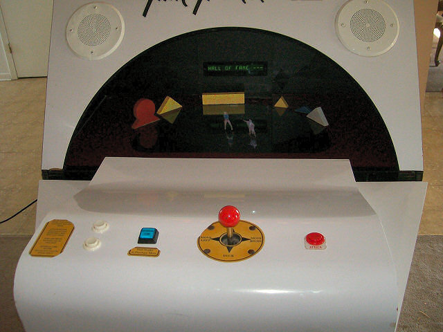

Sega Hologram Time Traveler
A curved mirror projects live-action actors as free-standing 3D figures above the cabinet — and a coin-bought 'time reversal' button rewinds your mistakes

Overview
Sega Hologram Time Traveler is a 1991 arcade cabinet that produces the visual impression of free-standing 3D actors by reflecting a 20-inch Sony CRT, mounted face-up inside the cabinet, off a large black hemispherical concave mirror. The reflected light forms a real image — not a virtual one — that appears to hover in mid-air above a small darkened stage ringed by neon geometric blocks. The actors are pre-recorded live-action footage on laserdisc; the player interacts via a 4-way joystick, an action button, and a 'time reversal' button that rewinds the last few seconds of a failed segment so the player can retry without restarting the entire scene. The game was designed by Rick Dyer, creator of Dragon's Lair (1983), through his Virtual Image Productions studio and GTE ImagiTrek / GTE Interactive Media. Sega published and distributed it; the optical system is described in US Patent 4,776,118 ('Display device,' inventor Goro Mizuno, assigned to Decos Co. Ltd, Japan, filed February 1986, granted October 1988).
The cabinet launched in the United States in July 1991 (LA Times, July 23, 1991) and in Japan in October 1991. Development budget was approximately $2 million. The underlying hardware is Sega's LaserDisc arcade board (Zilog Z80, per Sega's Wikimedia infobox), with a Sony LDP-class laserdisc player (specific model unverified). The optical stage — which Sega branded the 'Micro-theater' — was a fragile assembly; per Sega Retro citing System16, Time Traveler cabinets had hardware problems, and Sega's 1992 Holosseum was produced specifically as a replacement, reusing the same concave-mirror display in a different game. AMOA nominated Time Traveler for 'Most Innovative New Technology' in 1992.
The 'hologram' label is marketing language, not technical. The patent explicitly calls it a 'real image' produced by a single direct reflection from the CRT to the concave mirror and back into space above the cabinet — a Pepper's-ghost-lineage stage illusion, not laser-interference holography. The viewing angle has a narrow sweet spot, and surviving working cabinets are rare (occasional appearances at California Extreme and in private collections). The 2001 Digital Leisure DVD re-release substitutes anaglyph 3D glasses for the mirror and was mocked by Official UK PlayStation 2 Magazine with a 0/10 score.
Deep dive
Rick Dyer had already transformed arcade gaming once with Dragon's Lair (1983), the first laserdisc arcade game and the template for the entire branching-FMV genre. By 1991 he wanted to go further: not just play a movie, but make the screen itself disappear. Through Virtual Image Productions (his own studio) and GTE ImagiTrek / GTE Interactive Media, Dyer developed Time Traveler with an approximately $2 million budget. Live-action footage was produced by director Mark E. Watson of Fallbrook, California, filmed in San Diego with a ~5-person crew and post-production in Carlsbad, CA. Over 1,000 actors auditioned; Marshal Gram was played by Stephen Wilber (also stunt coordinator) and Princess Kyi-La by LeAnn McVicker. Sega Enterprises published and distributed the cabinet, debuting it in US arcades the week of July 23, 1991 (LA Times, primary source). Japan release followed in October 1991. The optical stage — patented by Goro Mizuno and assigned to Decos Co. Ltd of Kyoto (US 4,776,118, priority February 1985) — was, per the LA Times, integrated into the Sega cabinet by the Japanese advertising firm Dentsu. Wikipedia's uncited claim that Dentsu 'invented' the device likely derives from the LA Times article; the patent is the authoritative source on inventorship.
The player faces the cabinet and looks down at a small darkened stage. A 4-way joystick (not 8-way) and two buttons — an action button and a time-reversal button — sit on the control panel in front of them. As in Dragon's Lair, gameplay is a branching-FMV sequence: the player enters a direction or button press at decision points; correct input plays the next pre-recorded clip, wrong input plays a unique death scene. Seven 'time period' levels (prehistoric, Middle Ages, future, Age of Magic, etc.) contain roughly 60 total scenes, of which only about 20 are needed to finish — enabling different playthroughs. The 'Hellgate' slot-machine mini-game lets the player bet a life to win or lose extra lives or credits. The distinctive HCI mechanic is the time-reversal button: each player starts with one 'time-reversal cube' that lets them rewind the last few seconds of a failed segment rather than restarting it. Additional cubes can be bought by inserting more coins between levels — a coin-purchasable mechanical 'undo' for branching video, which is not present in Hard Drivin' (force feedback), Sega R360 (motion cockpit), or any other artifact in the museum's arcade collection.
Time Traveler's display is the only one of its kind in the museum. A 20-inch Sony CRT television is mounted horizontally inside the cabinet, facing upward. Above it sits a large black hemispherical concave mirror. Light from the CRT's phosphor strikes the mirror and is reflected back upward to form a real image — physical light converging in actual space above a flat dark stage — not a virtual image seen through a lens. The actors appear as tiny (LA Times reports 3 inches; Wikipedia says 5 inches; both unverified) free-standing figures standing on the stage in front of the player. The optical principle is described in US Patent 4,776,118 ('Display device,' Goro Mizuno / Decos Co. Ltd, 1988). The viewing angle has a narrow sweet spot. The cabinet is non-standard oversized cocktail-like: 50"H × 43"W × 45"D, 370 lb (170 kg). Several neon geometric blocks sit at the back of the stage as the only background. This is a Pepper's-ghost-lineage stage illusion — sometimes misleadingly called 'holographic' in Sega's promotional material, but it is not laser-interference holography. The patent explicitly calls the result a 'real image' produced by a single direct reflection.
Sega Retro, citing System16, confirms that Time Traveler cabinets had hardware problems and that Holosseum (1992, Sega AM1, System 32 hardware) was produced specifically as a replacement, reusing the concave-mirror display in a fighting-game format. Holosseum is the only other Sega arcade game to use the Micro-theater. No official Sega production figures have been located; Digital Leisure's 2000 press release claimed 'over $18 million in revenue in its arcade debut,' but this is a marketing claim from the DVD re-release publisher and should be treated with skepticism. In Japan, Game Machine magazine (Nov 15, 1991) ranked Time Traveler as the 8th most-successful upright/cockpit arcade unit of the month — credible evidence of at least moderate initial success. AMOA nominated it for 'Most Innovative New Technology' in 1992. The One magazine (UK, September 1991) praised it as 'an exceptionally well polished piece of software.' Surviving working cabinets are rare — private collections and occasional appearances at California Extreme. No arcade-version emulation exists; the 2001 Digital Leisure DVD re-release substitutes anaglyph 3D glasses for the mirror and was mocked by Official UK PlayStation 2 Magazine with a 0/10 score.
Time Traveler embodies the player through perceptual illusion rather than haptic or motion feedback. The interface's claim is that the actor stands physically in front of the player, not on a screen — a 1991 attempt to make the screen disappear that belongs alongside the haptic embodiment of Hard Drivin' and the gyroscopic embodiment of Sega R360. The 'time reversal' input is a distinct HCI mechanic not present in any other museum artifact: a coin-purchasable mechanical undo for branching video. The fragile cabinet, the misleading 'holographic' marketing language, and the production of Holosseum specifically as a replacement make Time Traveler a textbook doomed-but-sincere HCI artifact — exactly the kind of failed idea the museum is here to keep.
Team & pioneers
- Rick Dyer. Designer. Creator of Dragon's Lair (1983); founder of Virtual Image Productions. Designed the Time Traveler engine and directed the project.
- Virtual Image Productions / GTE ImagiTrek (GTE Interactive Media). Development studios. Rick Dyer's Virtual Image Productions partnered with GTE ImagiTrek for development.
- Sega Enterprises. Publisher and distributor of the arcade cabinet. Built and shipped the cabinet hardware.
- Goro Mizuno / Decos Co. Ltd. Inventor and assignee of US Patent 4,776,118 ('Display device,' filed 1986, granted 1988), describing the concave-mirror real-image display used in Time Traveler.
- Mark E. Watson. Producer/director of the live-action footage. Fallbrook, California. Filmed in San Diego with a ~5-person crew; post-production in Carlsbad, CA.
- Stephen Wilber. Actor (Marshal Gram) and stunt coordinator.
- LeAnn McVicker. Actor (Princess Kyi-La).
Media

Sources
- Wikipedia: Time Traveler (video game)
- Sega Retro: Time Traveler (CC-BY-4.0; release dates, Holosseum replacement note, images)
- Sega Retro: Holosseum (Time Traveler replacement)
- Weber, Jonathan (1991-07-23). 'Sega Unveils 3-D Holographic Video Game,' Los Angeles Times
- US Patent 4,776,118A: Display device (Goro Mizuno / Decos Co. Ltd, 1988) — Google Patents
- Wikimedia Commons: Category:Hologram Time Traveler (5 public-domain photos)
- The Arcade Flyer Archive: Sega Time Traveler flyer
- Dragon's Lair Project: Time Traveler promotional materials